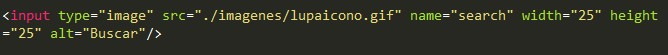
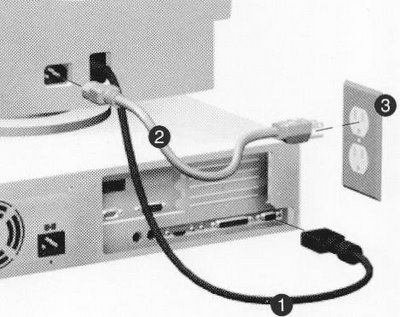
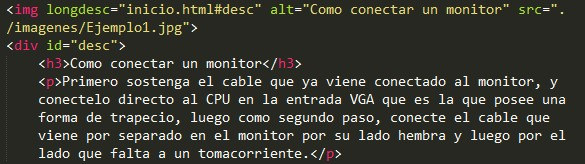
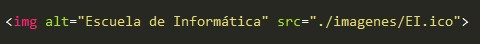
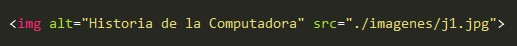
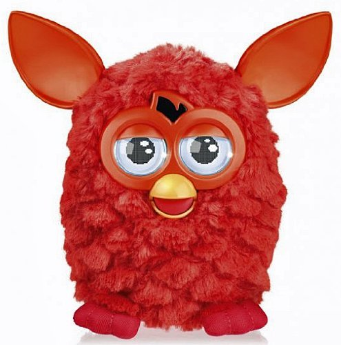
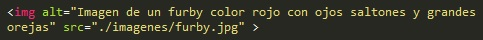

Pauta 1.1 Alternativas textuales
La información y los componentes de la interfáz de usuario deben ser presentados a los usuarios de modo que ellos puedean percibirlos
La información y los componentes de la interfáz de usuario deben ser presentados a los usuarios de modo que ellos puedean percibirlos
La información y los componentes de la interfáz de usuario deben ser presentados a los usuarios de modo que ellos puedean percibirlos
Todo contenido no textual que se presenta al usuario tiene una alternativa textual que cumple el mismo propósito, excepto en las situaciones enumeradas a continuación:
Controles, entrada de datos: Si el contenido no textual es un control o acepta datos introducidos por el usuario, entonces tiene un nombre que describe su propósito.
Contenido multimedia tempodependiente: Si el contenido no textual es una presentación multimedia con desarrollo temporal, entonces las alternativas textuales proporcionan al menos una identificación descriptiva del contenido no textual.
Pruebas: Si el contenido no textual es una prueba o un ejercicio que no sería válido si se presentara en forma de texto, entonces las alternativas textuales proporcionan al menos una identificación descriptiva del contenido no textual.
Sensorial: Si el contenido no textual tiene como objetivo principal el crear una experiencia sensorial específica, entonces las alternativas textuales proporcionan al menos una identificación descriptiva del contenido no textual.
CAPTCHA: Si el propósito del contenido no textual es confirmar que quién está accediendo al contenido es una persona y no una computadora, entonces se proporcionarán alternativas textuales que identifican y describen el propósito del contenido no textual y se proporcionan alternativas de CAPTCHA con modos de salida para distintos tipos de percepciones sensoriales, con el fin de acomodarse a las diferentes discapacidades.
Decoración, formato, invisible: Si el contenido no textual es simple decoración, se utiliza únicamente para definir el formato visual o no se presenta a los usuarios, entonces se implementa de forma que pueda ser ignorado por las ayudas técnicas.
1. Para un botón de búsqueda que tiene como imagen una lupa, el texto que debería poseer es 'buscar' en vez de 'lupa'.
2. Si una imagen o animación muestra como cambiar una llanta, un texto alternativo BREVE indica sobre que es la animación, mientras que un texto alternativo LARGO, describe como cambiar la llanta.
 3. Para los logos, su texto alternativo debe ser el nombre de la compañia dueña del logotipo.
4. Una imagen contiene un encabezado con el titulo 'Historia de la computadora, su texto alternativo debe dcir 'Historia de la computadora'.
5. Si una imagen muestra la parte delantera de un objeto, el texto alternativo debe describir la parte delantera del objeto.
 